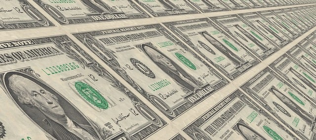

The New Way to Catch a Fish
No More Hooks = More Fish in the Sea to Release

We offer many financing options such as "Pay in Four" with little interest. But, this shouldn't be needed since the Dome Fishing Rod comes at the low price of only $34.99!
The shipping cost is calculated at checkout, but we offer delivery across the world. The Glass Dome Fishing Rod is an innovative technology unheard of before that will change the way we view recreational fishing. It is worth your investment for our future generations.